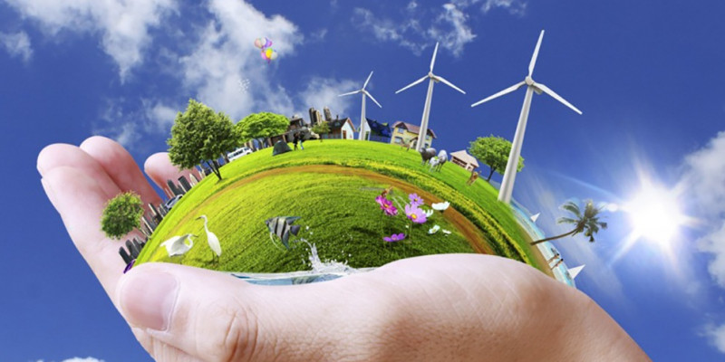
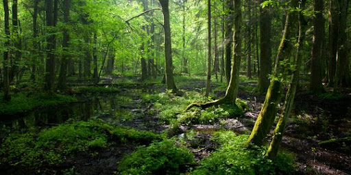

Kerja sama bilateral antara Indonesia dan Kanada di bidang lingkungan dan perubahan iklim mencerminkan komitmen kedua negara untuk menghadapi tantangan global dalam upaya melindungi lingkungan dan mengurangi dampak perubahan iklim. Berikut adalah poin-poin penting dalam kerja sama ini:


1. Pengurangan Emisi Gas Rumah Kaca
Komitmen terhadap Paris Agreement:
Kanada dan Indonesia adalah bagian dari Perjanjian Paris yang berkomitmen untuk membatasi kenaikan suhu global hingga di bawah 2°C. Dalam hal ini, Kanada mendukung Indonesia dalam mencapai target penurunan emisi gas rumah kaca sebesar 29%-41% pada tahun 2030.
Proyek REDD+:
Melalui inisiatif Reducing Emissions from Deforestation and Forest Degradation (REDD+), Kanada memberikan dukungan teknis dan pendanaan untuk membantu Indonesia melindungi hutan tropisnya, yang berperan penting dalam menyerap emisi karbon dunia.
2. Perlindungan dan Konservasi Hutan
Pengelolaan Hutan Berkelanjutan:
Kanada, melalui program yang didanai oleh lembaga seperti Canadian International Development Agency (CIDA), membantu Indonesia dalam meningkatkan pengelolaan hutan secara berkelanjutan. Dukungan ini mencakup pelatihan bagi masyarakat lokal untuk meningkatkan kapasitas mereka dalam menjaga ekosistem hutan.
Konservasi Keanekaragaman Hayati:
Kanada turut serta dalam mendanai proyek konservasi untuk melindungi spesies yang terancam punah di Indonesia, seperti harimau Sumatra dan orangutan. Kerja sama ini melibatkan penelitian dan pengelolaan kawasan konservasi.
3. Transisi ke Energi Terbarukan
Investasi dalam Energi Bersih:
Beberapa universitas di Kanada menawarkan program studi tentang Indonesia, termasuk bahasa Indonesia dan studi Asia Tenggara. Kegiatan ini membantu memperkenalkan bahasa dan budaya Indonesia kepada mahasiswa dan masyarakat Kanada.
Aliansi Energi Bersih:
Kedua negara bekerja sama melalui inisiatif global seperti Clean Energy Transition Partnership, yang membantu Indonesia mempercepat transisi energi dan mengurangi ketergantungan pada bahan bakar fosil.
4. Peningkatan Kapasitas dan Teknologi Hijau
Transfer Teknologi Hijau:
Kanada memberikan bantuan teknologi hijau untuk membantu Indonesia meningkatkan efisiensi dalam pengelolaan limbah, pemurnian air, dan produksi energi bersih. Teknologi ini termasuk sistem penangkapan karbon dan pengelolaan sampah menjadi energi (waste-to-energy).
Pelatihan dan Pendidikan:
Kanada menyelenggarakan program pelatihan untuk memperkuat kapasitas Indonesia dalam pengelolaan lingkungan. Program ini melibatkan pelatihan untuk pengelolaan limbah industri dan mitigasi risiko bencana lingkungan.
5. Pengelolaan Sampah dan Plastik
Inisiatif Pengurangan Sampah Plastik:
Kanada mendukung Indonesia dalam mengatasi masalah polusi plastik, terutama di lautan. Program kerja sama ini melibatkan pengembangan teknologi daur ulang plastik dan kampanye kesadaran publik untuk mengurangi penggunaan plastik sekali pakai.
Program Circular Economy:
Kanada mendorong implementasi konsep circular economy di Indonesia, di mana limbah dikelola dengan cara yang lebih efisien, sehingga dapat diubah menjadi sumber daya baru.
6. Mitigasi dan Adaptasi Perubahan Iklim
Pengurangan Risiko Bencana Iklim:
Dengan pengalaman Kanada dalam menghadapi bencana iklim, kedua negara bekerja sama untuk meningkatkan sistem peringatan dini bencana di Indonesia, seperti banjir dan tanah longsor.
Adaptasi Komunitas Lokal:
Kanada mendukung program adaptasi perubahan iklim yang melibatkan masyarakat lokal, seperti pemberdayaan petani dalam menghadapi perubahan pola cuaca melalui teknologi pertanian modern.
7. Kerja Sama di Forum Internasional
Konferensi Perubahan Iklim PBB (COP)
Kanada dan Indonesia secara aktif bekerja sama di forum internasional seperti Conference of the Parties (COP) untuk mempromosikan langkah-langkah mitigasi perubahan iklim dan memperjuangkan pendanaan iklim bagi negara-negara berkembang.
Green Climate Fund (GCF):
Kanada memberikan dukungan keuangan melalui Green Climate Fund untuk membantu Indonesia dalam menjalankan proyek-proyek mitigasi perubahan iklim, termasuk restorasi lahan gambut dan pengelolaan pesisir.
8. Rehabilitasi Lahan Gambut dan Mangrove
Restorasi Ekosistem Gambut:
Kanada bekerja sama dengan Indonesia melalui Badan Restorasi Gambut (BRG) untuk merehabilitasi lahan gambut yang rusak akibat kebakaran dan pembukaan lahan. Proyek ini berkontribusi pada pengurangan emisi karbon yang signifikan.
Konservasi Mangrove:
Kanada mendukung inisiatif Indonesia untuk melestarikan ekosistem mangrove, yang berperan penting dalam perlindungan garis pantai dan penyimpanan karbon biru (blue carbon).
9. Dukungan Pendanaan Hijau
Investasi Hijau:
Kanada mendorong investasi hijau melalui kolaborasi dengan sektor swasta dan organisasi internasional, dengan fokus pada proyek-proyek yang berkelanjutan di Indonesia.
Pendanaan untuk Proyek Hijau:
Kanada telah menyalurkan pendanaan ke berbagai proyek hijau di Indonesia melalui lembaga-lembaga seperti Global Environment Facility (GEF).